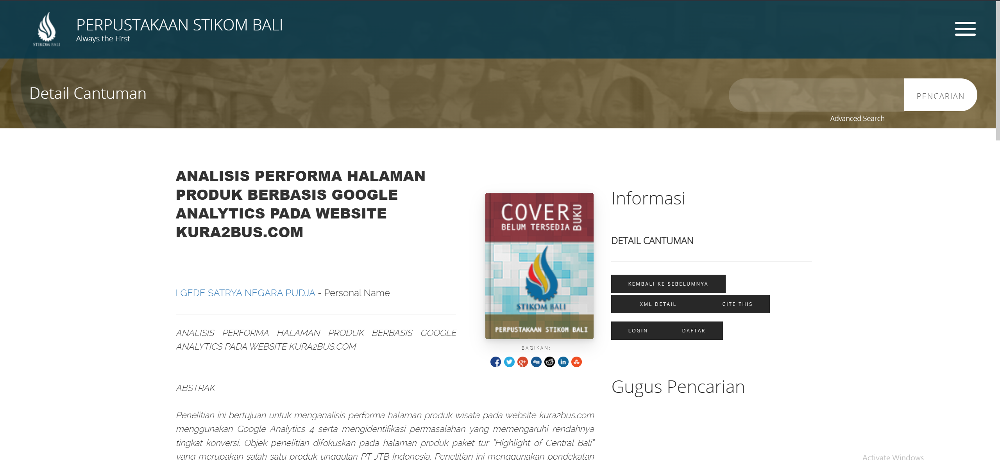

SEO & Analytics · Bachelor thesis · 2026
97 booking clicks. One transaction.
My bachelor thesis on the performance of Kura2Bus's Highlight of Central Bali tour page.
Problem
The tour page depended on paid traffic, but booking interest rarely became a completed transaction. Acquisition, user experience, and the booking system were not working together effectively.
What I did
Used a mixed-method, sequential exploratory study: observations and interviews first, then descriptive–diagnostic GA4 analysis of traffic trends, geography, traffic sources, and user interactions.
Tools
Google Analytics 4 · Traffic reports · Event tracking: page views, engagement, scroll depth, and booking-button clicks
Result/Insight
- Booking clicks
- 97
- Transactions
- 1
- Organic average session
- 388 seconds
Organic sessions averaged 388 seconds versus about 70 seconds from paid channels. Google/CPC brought visits with low interaction and no booking actions; the audience remained mainly domestic.
Insight: attention alone was not enough. The 97-click-to-1-transaction gap pointed to friction after users left the product page. These are research findings, not a measured post-implementation uplift.
Evidence
The STIKOM Bali library lists my thesis and its abstract under I Gede Satrya Negara Pudja.
